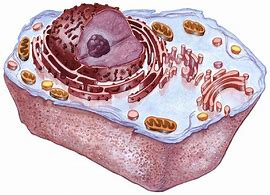
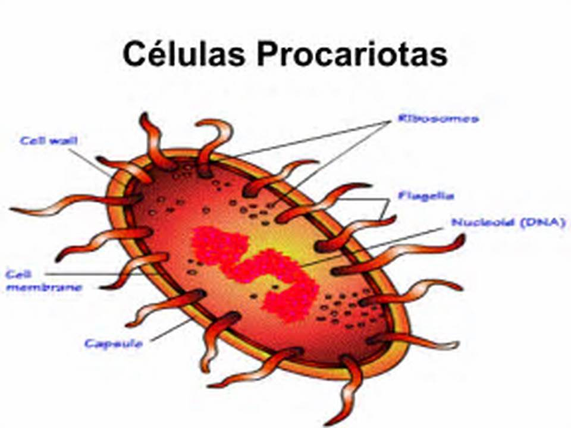
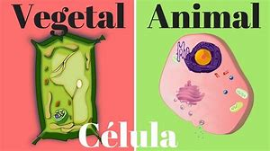
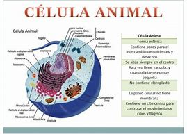
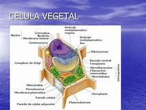

La célula es la unidad mínima de un organismo capaz de realizar autónomamente las tres funciones vitales de nutrición, relación y reproducción.
Por eso se la define como el componente morfológico, funcional y de origen de cualquier ser viviente.
Algunos organismos sólo cuentan con una célula, como los protozoos o las bacterias, en cambio los animales poseen millones de ellas.
Las células pueden clasificarse en dos grandes grupos:.

CÉLULAS EUCARIOTAS: en éstas el ADN se halla contenido dentro del núcleo. Además, el interior de ellas cuenta con numerosos compartimientos tales como las mitocondrias, los cloroplastos, el aparato de Golgi, el retículo endoplasmático, etc.
Las células eucariotas representan un progreso en la historia de los organismos vivientes, ya que su estructura compleja significó una evolución en este sentido.
Algunos de los organismos que presentan estas células en su interior son: animales, plantas, hongos, etc.

"
CÉLULAS PROCARIOTAS: su rasgo distintivo es la carencia de núcleo en su interior. Es por esta razón que el ADN se encuentra disperso en distintas regiones nucleares llamadas nucleoides. Éstos no poseen una membrana y están rodeados del citoplasma. Además, este tipo de células no cuentan con compartimientos internos y están comprendidos por una pared celular que rodea a la membrana externamente.
Las células procariotas son las mas antiguas de la tierra, y se estima que surgieron en el océano hace 3,5 millones de años.
Ej: bacterias.
A su vez, las células eucariotas se dividen de acuerdo a su origen en:

Celulas Animal: Vejetal

Célula animal: su característica principal es tanto la carencia de pared celular y cloroplastos, como también la pequeñez de sus vacuolas. Al no contar con una pared celular rígida, estas células son capaces de adoptar múltiples formas.
Por otra parte, las células animales tienen la capacidad de realizar la reproducción sexual donde los descendientes se asemejan a sus progenitores.

Célula vegetal: estas células, a diferencia de las animales, cuentan con una pared celular rígida. Además, poseen cloroplastos, a través de los cuales se realiza la fotosíntesis. De esta manera, los organismos constituidos por estas células son autótrofos, es decir, capaces de producir su propio alimento.
La célula vegetal se reproduce mediante una clase de reproducción denominada asexual, que origina células iguales a las progenitoras.